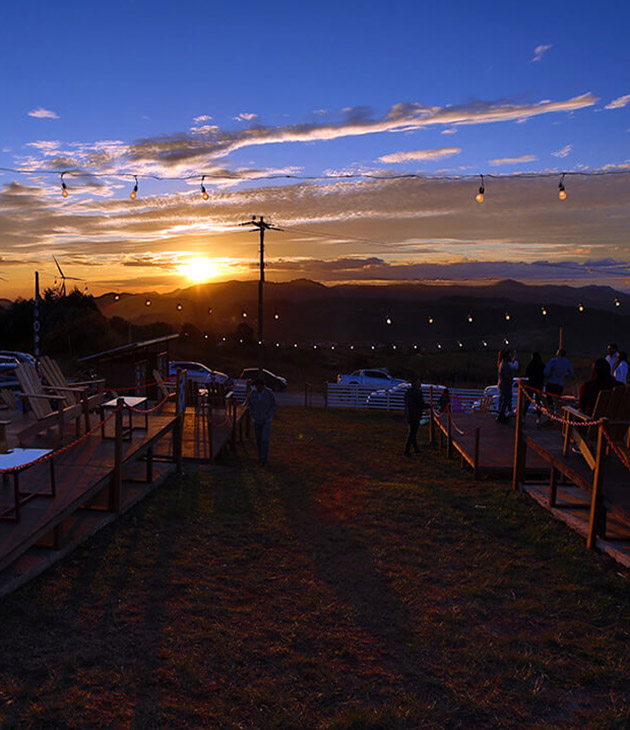
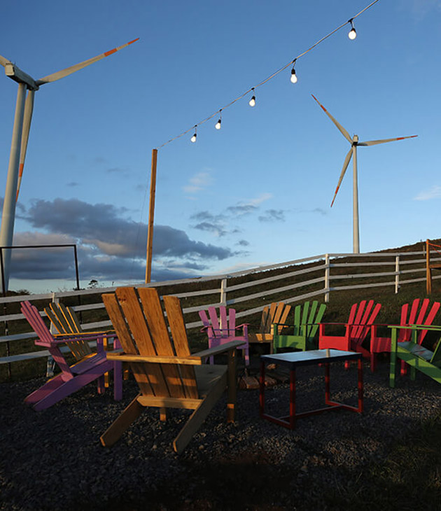
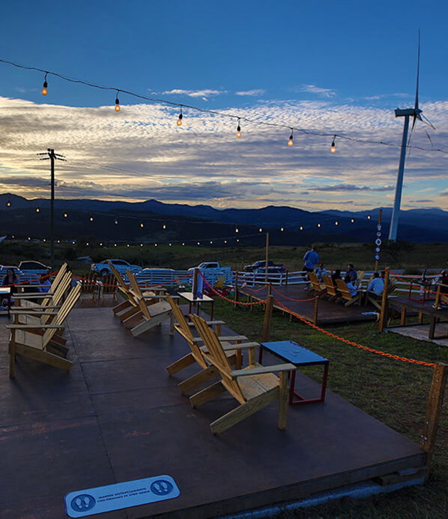

Situado en Santa Ana, más conocida como la ciudad de los vientos, esta posee muchos lugares para visitar, entre los cuales se destaca Latitud 1356. Este lugar ha captado la atención de muchas personas, ya que se encuentra ubicado justo cerca del parquet eolico.
Este es el lugar perfecto para ir a tardear con amigos, pareja o incluso la familia, siempre respetando las medidas de bioseguridad, pues se creó con el fin de que todas las personas pudieran llegar, desde niños hasta adultos mayores, incluso se permite la entrada de mascotas.
En el corazón de Santa Lucía, en Tres Puntos podrás disfrutar tus tardes o noches escuchando buena música, disfrutando deliciosas opciones para comer y beber, siempre acompañado por los majestuosos atardeceres y una hermosa vista nocturna.
En Tres Puntos un lugar para disfrutar de todo su ambiente, sus platillos, bebidas, postres, su hermosa vista, su música, su atención y mucho mas!
Conocido como uno de los restaurantes más románticos de Centro América. La Cumbre se caracteriza por su posición privilegiada entre las montañas de Tegucigalpa.
La Cumbre cuenta con la mejor vista de la ciudad, un menú exclusivo preparado por el chef de la casa para cada época del año, un equipo de meseros altamente calificados y coordinadoras de eventos en el staff que hacen de este restaurante un lugar único, donde cada evento se vuelve una experiencia culinaria.
Angeli Gardens es el producto de la evolución natural. Comenzó a finales de los 70 como un pequeño vivero artesanal enclavado en las faldas de la sierra de Merendón en San Pedro Sula. El amor de sus propietarios por la naturaleza y la horticultura nutrió su crecimiento.
Hoy, Angeli Gardens combina la tranquilidad del vivero con las deliciosas delicias de un restaurante, la belleza de varios jardines y la conciencia ecológica de su entorno para brindar a los locales y visitantes un ambiente naturalmente agradable.
Desde 1997 el restaurante elegido por familias, parejas somos ejecutivos para degustar la mejor pasta de la ciudad ya que ellos saben que nuestras recetas son auténticas de Italia. Con un rango de precios intermedio alto, es una cocina inspirada en lo mejor de Tuscan, Central-Italian. Incluyendo plato para todos en la familia, incluso aquellos que son vegetarianos
Situados en Santa Lucia, hemos creado un ambiente especial para lo que más valoramos, nuestra familia. Viva momentos inolvidables junto a sus seres queridos. Disfrute de las más amplia variedad de platillos preparados con el mejor sazón de nuestros chefs.
Abierto todos dias del año, los fines de semana con el mejor ambiente nocturno en nuestro bar "Bajo Cero" con una amplia variedad de bebidas abierto hasta las 2.00 A.M.